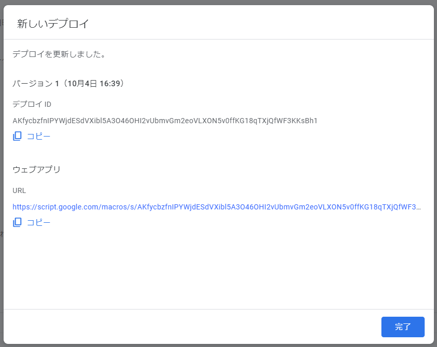

for Chrome:
for Chrome: for Edge:
for Edge: for FireFox:
for FireFox: for iOS/iPadOS/Android:
for iOS/iPadOS/Android:Google連携設定
PCでScombZにログインするたびに、課題・アンケート情報が自動的にGoogleサービスに同期されるようになります。
Googleカレンダー及びGoogle ToDo（リマインダー）に課題・アンケートが自動登録され、スマートフォンやその他デバイスで確認しやすくなります。
所要時間: 5~10分程度
2022/10/21 多重登録バグについて
本機能リリース～本日まで、同一の課題が多重登録されるバグが発生しておりました。
以下の手順で修正パッチが適用済みのスクリプトが導入できますので、以前に初期設定していただいた方はお手数ですがもう一度やり直していただきますようお願い申し上げます。
初期設定手順
Googleアカウントにログインした状態で
こちらのGASテンプレート
にアクセスします。
画面左端にマウスカーソルを移動すると、メニューが開きます。iマークの「概要」をクリックします。
画面右上部に、↓画像のようなアイコンがあります。コピーアイコンをクリックしてください。
クリックすると画面左下に「コピーしています」というダイアログが表示されます。そのまましばらく待ちます。
コピーが作成されて新しいタブで開かれたら、画面右上の青い「デプロイ」ボタンから、新しいデプロイを選択します。
歯車ボタンから、「ウェブアプリ」を選択します。下の画像を参考に、「次のユーザーとして実行:自分」「アクセスできるユーザー:全員」として選択し、デプロイします。
「このウェブ アプリケーションを使用するには、データへのアクセスを許可する必要があります。」と表示されたら、「アクセスを承認」をクリックしてください。
ポップアップが開くので、Googleアカウントでログインします。(ポップアップが開かない場合はブラウザでブロックされている可能性があるので確認してください)
次のような画面が表示された場合は、Advancedをクリックして、「Go to Copy of GASテンプレート (unsafe)」をクリックしてください。
Allowをクリックします。
ポップアップが閉じて以下の画面のようになるので、下の「ウェブアプリ」の「URL」のコピーボタンを押してください。

ScombZ Utilitiesの設定画面を開き、「Google連携設定」のURLの入力欄に、今コピーしたURLをペーストし、保存してください。
以上で初回設定は完了です。
利用方法・設定
URL入力欄に適当なURLが保存されていれば動作します。
複数端末でScombZ Utilitiesを利用している場合、同じURLを入力してください。
「Googleカレンダーと連携」にチェックが入っている場合、設定したPCでScombZにログインするたびに「課題」と「課題表示設定されたアンケート」がGoogleカレンダーの予定としてリンクされ、表示されるようになります。
「Google ToDo」にチェックが入っている場合、設定したPCでScombZにログインするたびに「課題」と「課題表示設定されたアンケート」がGoogle ToDoのタスクとしてリンクされ、表示されるようになります。
ただし、仕様上Google ToDoはAPIから時刻を設定できないため、日付のみが保存されます。そのため何時まで、という情報まで欲しい方は必ずGoogleカレンダーにもチェックを入れるようにしてください。
通常、Google ToDoで設定しておくだけでGoogleカレンダーにも表示されるため、基本的にはGoogle ToDoへのチェックのみで大丈夫です。
Google ToDoモバイル版はAppStore、PlayStoreからダウンロード/インストールしてください。